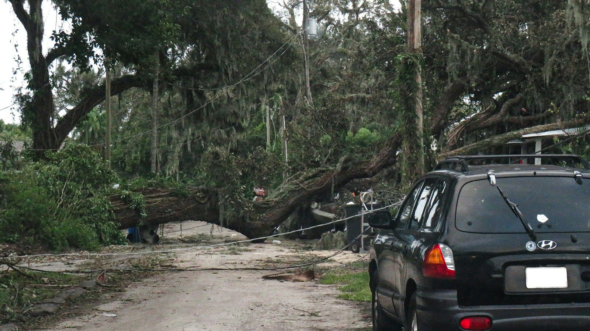

After Helene and Milton came through in 2024, our phones didn't stop ringing for months. Out on those calls, we noticed something that stuck with us. Roofs that had been looked after before the season mostly came through with minor damage. Roofs that hadn't been touched in years were the ones we were tarping in the rain.
You can't control the storm. You can control what shape your roof is in when it gets here, and how you handle things afterward. Here's how we'd walk a friend through it.
Before the storm
Get the roof inspected. Ideally early in the season, but August through October is our peak, so it's never too late. We're looking for loose or lifted shingles, cracked or slipped tile, worn flashing and dried-out sealant. Those are the spots wind gets under first.
Know your roof-to-wall connection. Hurricane clips and straps are what help keep the roof on the house. If you've never had a wind mitigation inspection, it's worth it, and it can lower your insurance premium. We wrote more about that in our post on hurricane clips.
Trim the trees. Branches hanging over the roof are the most common source of serious damage we see after a storm.
Clear the gutters and the yard. Clogged gutters back water up under the roof edge. Patio furniture, planters and grills turn into projectiles in high wind, so bring them in.
Take pictures now. Photos of your roof and your attic, dated, before anything happens. If you ever file a claim, being able to show what the roof looked like beforehand is worth a lot.
Read your policy. Know your hurricane deductible before you need it. It's usually a percentage of your home's insured value, not a flat number, and it surprises people.
Save our number. After a big storm, every roofer in the state is busy. It helps to already know who you're calling.
During the storm
Stay inside and stay safe. Nobody should be on a roof or a ladder in a storm, period. If water starts coming in, put down buckets and towels, move furniture and valuables out of the way, and if water is getting near light fixtures or outlets, turn off the power to that area at the breaker.

After the storm
Don't climb up there. Wet, damaged roofs are dangerous, and there may be loose material or downed lines nearby. Walk around the house instead and look from the ground. Missing shingles or tiles, debris on the roof, lifted edges, and a pile of granules coming out of the downspouts are all signs.
Check inside. Look at ceilings for stains or sagging, and if you can safely get into the attic, look for wet insulation or daylight coming through.
Document everything. Photos and video of the damage, inside and out, before anything is cleaned up or moved.
Prevent more damage. If there's an opening in the roof, it needs to be covered quickly. We provide emergency tarping so a damaged roof doesn't turn into a soaked house while you wait on the insurance process.
Call your insurance company promptly. Florida's deadlines for filing roof claims have gotten shorter in recent years. Don't sit on it.

Watch out for storm chasers
After every big storm, crews from out of state show up knocking on doors. Some are fine. A lot are not, and they're gone long before any problems with their work show up. A few red flags:
- They show up unannounced and want you to sign something on the spot.
- They ask for a large deposit, or ask you to sign your insurance benefits over to them.
- They can't give you a local address or a Florida license number.
You can look up any roofer's license on the state's DBPR website in about a minute. Ours is CCC1333650, and we've been in the same community since 1989. We're not going anywhere.
We're here before and after
We'd much rather see you before a storm than after one. A pre-season inspection is the easiest way to head off the worst of it. And if a storm does do damage, we'll document it, help protect the house, and work with you through the insurance process from start to finish.
Want your roof checked before the next storm, or need help after one?
Call (727) 397-3800